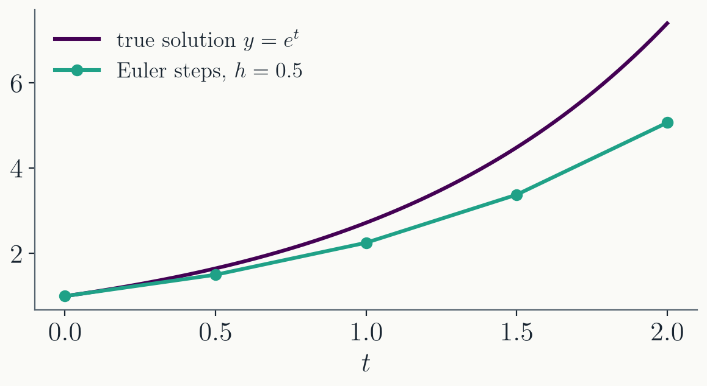
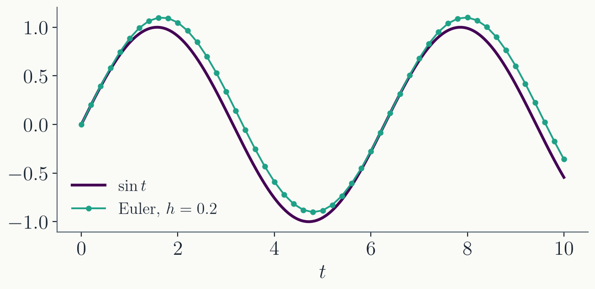
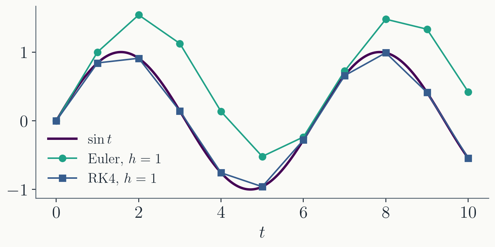
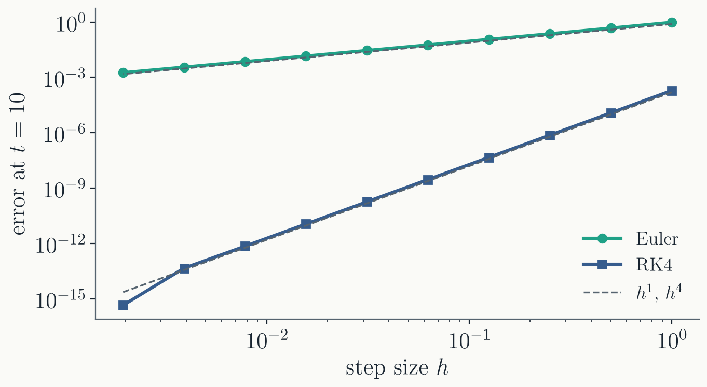

Any $n$-th order ODE becomes a system of
$n$ first-order ODEs this way. Solvers only ever need to handle
$d\mathbf{y}/dt = \vec{f}(t, \mathbf{y})$.
Initial value problems
An initial value problem
(IVP) supplies the missing condition at one point:
$$\frac{dy}{dt} = f(t, y), \qquad y(t_0) = y_0$$
This is time evolution: the state of the
system now, predict it later. Most of mechanics, circuits,
orbits, and population models take this form.
The other common type is the
boundary value problem: conditions at both ends of
an interval, such as a field with fixed values on two
plates. IVPs now; BVPs later in the course.
Part II · Euler's method
Follow the tangent
Euler's method
The ODE gives the slope at every point.
Step $h$ along the current slope and repeat:
$$y_{n+1} = y_n + h\, f(t_n, y_n)$$

Each step is
exact for a straight line, so curvature is what it misses;
here every step lands below the curving-up exponential.
Euler's method: the error
One step is a Taylor series cut after the first
derivative:
$$y(t + h) = y(t) + h\, y'(t) + O(h^2)$$
so the error of a single step is $O(h^2)$.
Reaching a fixed time $T$ takes
$N = T/h$ steps. As with the integration rules: per-step
error, times $N$, loses one power of $h$. The accumulated
error is $O(h)$.
First order: halve $h$, halve the error,
and double the work.
Drawbacks of Euler's method
First order is expensive: every digit of accuracy costs a
factor of 10 in steps.
The error compounds: each step starts
from the slightly wrong point the previous step
produced.
It can be unstable: for some equations
the numerical solution blows up even though the true
solution decays. Defined and analyzed next lecture.
Almost nobody should use Euler as-is.
Part III · Runge-Kutta methods
Better slopes, same idea
The midpoint method
Use the Euler step only to
estimate the slope at the middle of the interval, then
take the real step with that slope:
$k_1$: slope at the start. $k_2$, $k_3$:
two successively better midpoint slopes. $k_4$: slope at the
far end.
On $y' = y$ with $h = 1$, one step gives
$y_1 = 65/24 = 2.7083$, against $e = 2.7183$: the step
reproduces the Taylor series of the solution through
$h^4$.
RK4 facts
Fourth order: local error $O(h^5)$, accumulated error
$O(h^4)$. Halve $h$, gain a factor of 16.
If $f$ depends only on $t$, the ODE is an
integral, and RK4 reduces exactly to Simpson's rule: the
weights $\tfrac16, \tfrac13, \tfrac13, \tfrac16$ are
Simpson's $1, 4, 1$ over a double interval, since both $k_2$ and
$k_3$ are evaluated at the midpoint.
For much of physics, RK4 is the default
solver. In many papers "Runge-Kutta" means RK4.
Drawbacks of RK4
The step size is fixed: $h$ has to be chosen for the most
difficult part of the solution, and everywhere else the work
is wasted.
It is not built for stiff
equations, where stability rather than accuracy limits the
step (next lecture).
Sometimes fourth order is not enough;
long integrations of orbits want higher order or structure
preservation.
Part IV · Does it converge?
Estimate, then measure
A test problem
$dy/dt = \cos t$ with $y(0) = 0$,
whose exact solution is $y = \sin t$. Euler with $h = 0.2$:

The drift
reaches $0.2$ by $t = 10$: first order means the error is
about $h$, not about machine precision.
RK4 comparison
Both methods with the very coarse
step $h = 1$:

Euler is off by order 1; RK4 is off by
$3.5\times10^{-4}$, with only ten steps and forty
evaluations of $f$.
Measured convergence

Measured slopes: $1.006$ and $4.005$.
Below $h \approx 10^{-3}$, RK4 leaves its
line and flattens near $10^{-15}$: the rounding floor.
Smaller steps buy nothing more.
Without an exact solution
The test problem had $\sin t$ to compare against. In a real
problem we do not know the solution in advance.
The practical check: solve at $h$ and at
$h/2$, and compare. If the two agree to your tolerance, the
answer can be trusted at that level; if not, refine.
This is the same move as the doubling
trapezoid in Lecture 5, and it can be automated into a
solver that picks its own step size. That is where the next
lecture ends up.
Where this goes next
Next lecture:
where the RK coefficients come from, stiff equations and
stability, and implicit methods.
The ODE machinery culminates in Project 1:
tracing the image of a black hole.